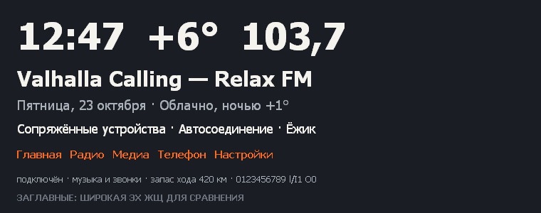

VestaHome 0.6 — больше воздуха
Макет 2026-10-23 по мотивам Škoda Flow HMI (Superb / Kodiaq / Enyaq 2024: «modern and minimalist design with
flatter 2D graphics», постоянная нижняя панель, верхняя — состояние и быстрые функции). Наше остаётся: тёмная тема, оранжевый
акцент, ромбы, 800×480; шрифт — свой, Golos Text (в папке VestaHome, на ГУ только Tahoma).
Что меняется
- Меньше элементов на экране, больше пустого места. Отступ от края 24 px, между карточками 16 px.
- Без рамок. Карточки отличаются от фона тоном (поверхность #1a1d22 на #0e1013), разделители в списках — 1 px.
- Скругления крупнее: карточки 20, окна 26, кнопки-«таблетки» — полукруглые.
- Иерархия размером: главное число 52–76 px, заголовок 26–34, текст 16–19, подписи 13–15. Регистр обычный, без
СПЛОШНЫХ ЗАГЛАВНЫХ.
- Оранжевый — только для активного и главного действия. Выбранное — мягкая оранжевая заливка (16%), главное
действие — сплошная.
- Ромбы: фон — крупная мозаика (64×112) почти в тон фону; оранжевые грани — на обложках и акцентных плитках.
Лёгкое оранжевое свечение в углу экрана.
- Значки линейные 24-сетка, линия 2 px; в нижней панели без подписей — подпись только у текущего раздела.
- Контраст: текст #f5f3ee на #1a1d22 — 15:1; вторичный #aab0b8 — 8:1; третичный #6c727c — для неважного.
Токены
| фон #0e1013 |
| карточка #1a1d22 |
| кнопка / вложенное #23272e |
| разделитель #2a2f37 |
| акцент #ff6b1a, заливка выбранного 16% |
| текст #f5f3ee · #aab0b8 · #6c727c |
| вызов / норма #33c27a |
Размеры
| Верхняя строка 48 · нижняя панель 64 |
| Поля 24 · промежутки 16 · строка списка 60 |
| Радиусы 20 карточка · 26 окно · ½ высоты «таблетка» |
| Касание ≥ 44 px, основные кнопки 56–76 |
Реализация на ГУ
Всё рисуется теми же средствами VH (GDI, 16 бит): прозрачность
и свечение — заранее посчитанные тона, без настоящего смешивания на лету; мозаика — периодическая плитка, как сейчас.
Плавность не страдает: элементов на кадр меньше, чем сейчас.Шрифт
На ГУ только Tahoma, но VestaHome может нести свой: обычный TrueType (.ttf, статические начертания — обычный и жирный) в своей папке Fonts, загрузка при старте (AddFontResource), реестр не нужен. Образцы ниже нарисованы GDI Windows так же, как рисует VH (сглаживание, размеры 52 / 30 / 19 / 18 / 15 / 13). Лицензия всех кандидатов — SIL OFL (можно класть в программу).
Tahoma · сейчас, есть на ГУ — привычный, узкий; жирный — грубоватый

Inter · OFL · 2 × 340 КБ — лучшая читаемость мелкого текста, различимы l / I / 1; тяжёлые файлы

GolosText · OFL · 2 × 70 КБ — для русских интерфейсов: плотный, крупные цифры; самые лёгкие файлы

Manrope · OFL · 2 × 97 КБ — геометричный, «автомобильный»; на 13 px тесно, I / l похожи

Onest · OFL · 2 × 98 КБ — геометричный, широкий; мелкий текст хуже Inter